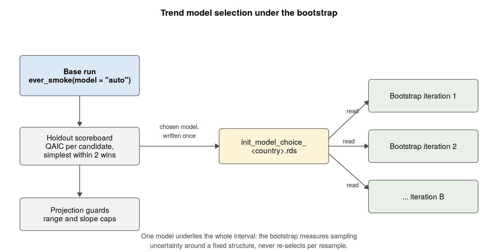
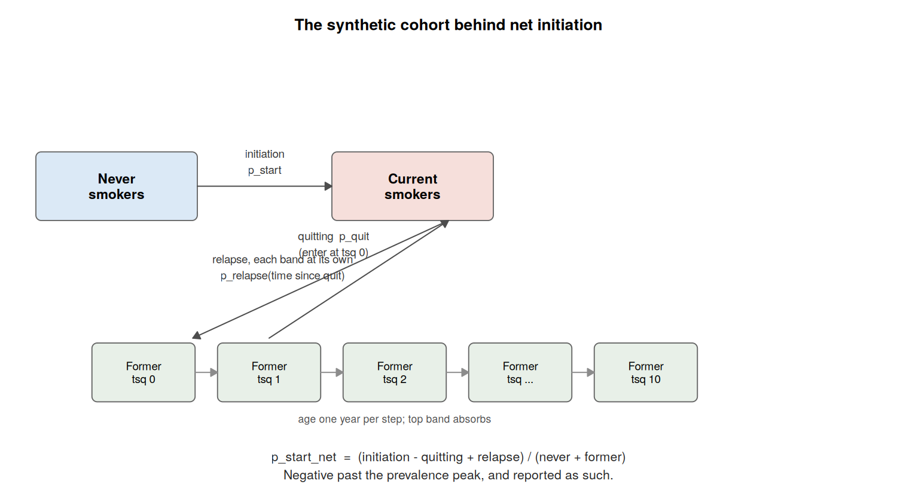

Workflow for Estimating Smoking Transition Probabilities
July 2026
Source:vignettes/smk_trans_prob_estimation.Rmd
smk_trans_prob_estimation.RmdOverview
This vignette provides a step-by-step guide to estimating the annual
probabilities of smoking initiation, quitting, and relapse using the
smktrans package. These estimates underpin the Sheffield
Tobacco Policy Model (STPM).
The core philosophy of this workflow is consistency. We do not estimate rates in isolation; instead, we use a “Stock and Flow” approach where the robustly measured number of smokers (the Stock) is used to solve for the unobservable quit rates (the Flow).
The package carries validation code that compares the estimates against survey data that had no part in producing them. The results of the validation for England are written up in the companion vignette, Validation of the England transition probabilities.
Phase 1: Initiation (The Inflow)
Objective: Estimate the probability of a Never Smoker becoming a Smoker at age in year .
The Challenge: People often forget exactly when they started smoking (“Recall Bias”). Furthermore, differential mortality means that early initiators are less likely to survive to be surveyed in older age. Using raw recall data alone would suggest initiation rates were lower in the past than they actually were.
The Solution: The Holford Method. We reconstruct histories based on reported starting ages (subject to bias) and adjust them to match the robust “Ever-Smoker” prevalence directly observed in each year.
-
Reconstruct (
init_est): Builds the “Risk Set” for every cohort using cross-sectional recall. Never smokers carry no starting age, so what this estimates is the distribution of starting ages among people who ever start; the level of the curve is pinned down entirely by the calibration in step 3.
-
Target (
ever_smoke): Fits a Generalized Linear Model (Quasibinomial) to estimate the true proportion of Ever-Smokers at age 30. The model structure can be selected from the data withmodel = "auto": candidates are scored on their ability to predict held-out survey years, the simplest model within a small margin of the best wins, and the winner’s projection is checked against guard rails before it is accepted. The scoreboard is returned with the output, so the choice can be inspected after the fact.
-
Anchor (
anchor_recent_cohorts): The targets from step 2 are only data-supported for cohorts old enough to have been surveyed at the reference age; for younger cohorts they are projections. Where a national youth smoking series is available – the Smoking, Drinking and Drug Use survey for England – the projected part of the target trajectory is anchored on it. The youth series is linked onto the target scale by a factor estimated on the cohorts both sources observe, applied as a cohort-level ratio so the sex and IMD gradients pass through unchanged, blended over a short taper at the handover, and held at its final value for cohorts born after the last youth survey. Cohorts inside the trend model’s data are untouched. The link factor absorbs both later initiation between the survey age and the reference age and the difference in what children and adults report; the working assumption, stated in the function documentation, is that this relationship is stable across cohorts. In the bootstrap the youth series is fixed external data, and the link factor is re-estimated in every iteration. Countries without a suitable series simply skip this step.
-
Calibrate (
init_adj): Scales the raw curves so their cumulative sum matches the targets. Cohorts too young to have been observed at the reference age are first completed: their curve is multiplied by the ratio measured on the most recent fully observed cohorts, so the age-30 target is compared against an age-30 quantity rather than an age- one. The youngest cohorts with usable data (min_ref = 18) calibrate on their own numbers.
# 1. Reconstruct longitudinal histories from cross-sectional recall
init_raw <- init_est(
data = survey_data,
strat_vars = c("sex", "imd_quintile")
)
# 2. Estimate the 'Truth': Proportion of ever-smokers at age 25-34
# "auto" scores the candidate structures on held-out years and picks the
# simplest one that predicts well; an explicit "model8" etc. still works
target_trends <- ever_smoke(
data = survey_data,
model = "auto",
age_cats = c("25-34")
)
# 3. Anchor the projected part of the target trajectory on the youth survey
# (England: SDD ever-smoked series; controlled by youth_anchor_* in the config)
target_trends <- anchor_recent_cohorts(
ever_smoke_data = target_trends,
youth_anchor_data = data.table::fread("05_input/sdd_ever_smoked_england.csv"),
ref_age = 30,
anchor_age_centre = 13,
taper_cohorts = 3
)
# 4. Adjust the curves using the Holford method
# This corrects the recall bias to match the targets at age 30, completing
# truncated cohorts up to an age-30 equivalent before the comparison
init_final <- init_adj(
init_data = init_raw,
ever_smoke_data = target_trends$predicted_values,
ref_age = 30,
min_ref = 18
)Model selection and the bootstrap
Selection is a base-run job. The base estimation chooses the
ever_smoke structure, writes the choice next to the other
outputs, and every bootstrap iteration reads it back rather than
re-selecting. One model therefore underlies the whole uncertainty
interval; the bootstrap measures sampling variation around a fixed
structure, never a blend of structures.

Phase 2: Relapse (The Reflow)
Objective: Estimate the probability of a Former Smoker becoming a Current Smoker.
The Challenge: Relapse risk depends heavily on Time Since Quit (TSQ). Most relapse happens in year 1. However, general cross-sectional surveys rarely capture enough long-term quitters to estimate late-stage relapse (5+ years post-quit) reliably.
The Solution: We combine survey demographics with clinical evidence (Hawkins et al., 2010) which provides the shape of the relapse hazard curve.
The packaged hawkins_relapse table is built by
data-raw/Relapse_Hawkins2010/prep_Hawkins_relapse.R. The
build pools the paper’s sparse years 6–9 into a single monotone tail,
and calibrates the baseline odds so that a cohort reconstructed from the
paper’s own Table 1 reproduces its reported one-year relapse rate
exactly. The script verifies this on every run.
-
Map (
prep_relapse): Calculates the weighted average relapse probability for every Age/Sex/IMD group by mapping their specific characteristics to the Hawkins hazard ratios.
-
Hold (
relapse_forecast): Carries the surface forward unchanged. Hawkins is a single study with no time dimension, so the only year-to-year movement in the relapse surface comes from the survey’s demographic re-weighting, and the forecast is stationary: future years take the jump-off surface. The verification suite checks that every published relapse probability lies inside the envelope of the Hawkins inputs it averages.
# 1. Map survey demographics to Hawkins' clinical hazard ratios
relapse_data <- prep_relapse(
data = survey_data,
hawkins_relapse = smktrans::hawkins_relapse
)
# 2. Carry the surface forward unchanged (forecast_type = "stationary"
# inside estimate_relapse): the evidence has no time dimension
relapse_final <- relapse_forecast(
relapse_forecast_data = relapse_trend_forecast,
relapse_by_age_imd_timesincequit = relapse_data$relapse_by_age_imd_timesincequit
)Phase 3: Trends in Current, Former and Never Smoking (The Stock)
Before we can solve for quitting, we need a clear picture of the “Stock” (Prevalence) and the “Leak” (Mortality).
Step 3.1: The Prevalence Map (trend_fit)
Raw survey prevalence is noisy. We cannot calculate year-on-year flows from jagged data. We fit a Multinomial Response Surface to smooth the data over time and age.
The model assumes the log-odds of being in a specific state are a
function of high-order interactions:
This surface has been tested against held-out survey years (fit on
all years but the last, predict the last, score against the people
actually surveyed in it) and beats a carry-last-year-forward baseline
comfortably. Any proposed change to it faces the same test: the harness
lives at
transition_probability_validation/30_trend_holdout.R.
Step 3.2: Differential Mortality (smoke_surv)
Smokers die faster than non-smokers. If we ignore this, we might mistake a drop in smoker numbers (due to death) for quitting. We calculate survival probabilities () specifically for Current, Former, and Never smokers using disease-specific relative risks.
# 1. Fit a smooth surface to the smoking states (Multinomial Model)
trend_surface <- trend_fit(
data = survey_data,
max_iterations = 1000,
smoker_state_var = "smk.state"
)
# 2. Calculate survival probabilities by smoking status
mortality_diffs <- smoke_surv(
data = survey_data,
mx_data = tob_mort_data,
diseases = tobalcepi::tob_disease_names
)Phase 4: Quitting (The Solver)
Objective: Calculate the “Hidden Flow” (Quitting).
The Logic:
We rely on the demographic balancing equation. We possess the following
knowns:
1. Stock
():
From trend_fit.
2. Inflow (Start): From init_adj.
3. Reflow (Relapse): From
prep_relapse.
4. Death (Survival
):
From smoke_surv.
We plug these into the Flow Equation to solve for the unknown Quit probability (). The fundamental population balance is:
Rearranging this to solve for :
Where Inflow includes both Relapse and Initiation.
The result is internally consistent by construction: run forward, the calculated quit rates reproduce the observed prevalence trends.
# Solve for the unknown variable: Quitting
# This function balances the stocks and flows
quit_rates <- quit_est(
trend_data = trend_surface,
survivorship_data = survivorship_data,
mortality_data = mortality_diffs$data_for_quit_ests,
relapse_data = relapse_data$relapse_by_age_imd,
initiation_data = init_final
)Phase 5: Forecasting the Future
Objective: Project these rates to 2040 and beyond.
The Solution: The Lee-Carter SVD
Method (see the R package Demography).
We employ a Singular Value Decomposition (SVD) approach, commonly used
in mortality forecasting. This allows us to model the logit of the rates
as a linear combination of an age-specific profile and a time-varying
index.
Where:
*
:
The average age profile (e.g., quitting peaks at age 30 and 60).
*
:
The time trend index (e.g., the general decline or rise in rates over
years).
*
:
The sensitivity of each age group to the time trend.
We project the Trend () forward linearly and recombine it with the Shape ().
Everything this function returns – past years as well as future – is
the reconstruction from the decomposition, not the input
estimates: the published historical surface is the smoothed rank-1 fit.
For initiation it runs with preserve_zeros = TRUE. A zero
in the initiation surface means nobody in that cohort starts at that age
(the cumulative curve in p_dense is monotone, so its flat
sections difference to genuine zeros), and those cells are held out of
the surface smoothing and restored afterwards, keeping the tail of the
age profile at the level the data gives it. Quitting and relapse leave
the flag off; their zeros are sparse-cell noise, and smoothing over them
is the right treatment.
# Forecast Quitting
quit_future <- quit_forecast(
data = quit_rates,
forecast_var = "p_quit",
forecast_type = "continuing",
time_horizon = 2040
)
# Forecast Initiation (using the same function)
# Zeros in the surface are real zeros and are kept out of the smoothing;
# the trend jumps off from the last estimated year rather than the year before
init_future <- quit_forecast(
data = init_final,
forecast_var = "p_start",
forecast_type = "continuing",
time_horizon = 2040,
preserve_zeros = TRUE
)Phase 6: Checking the Answer
Objective: Establish that the estimates agree with data that had no part in producing them.
Two instruments do this work.
Net initiation
(calculate_net_initiation): a synthetic cohort is
walked through the estimated probabilities, tracking never smokers,
current smokers, and former smokers by time since quit –
quitters enter at zero years and age one band per year, so every former
smoker relapses at the rate that actually applies to them. The net flow
into smoking,
relative to the non-smoking population, is a quantity an independent
prevalence survey can also measure. It turns negative past the age where
the cohort’s smoking prevalence peaks, and is reported as such: the
location of that sign change is itself part of what gets compared. Each
year’s cohort is synthetic within that year – ages are walked through a
single year’s probabilities – which is spelled out in the function
documentation because it matters when comparing against a survey
estimator that follows real cohorts through time.

The validation suite
(transition_probability_validation/ in the project
repository) compares quitting and net initiation against the Smoking
Toolkit Study over the estimated years, verifies the relapse surface
against an envelope derived from its own Hawkins inputs, and knits the
results into a standing report. The report doubles as a regression test:
it is re-run after any change to the estimation, and the England results
are written up in the companion vignette.